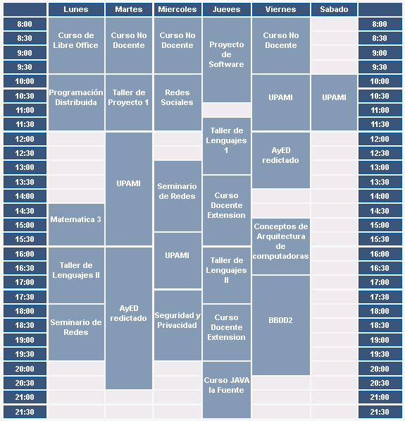
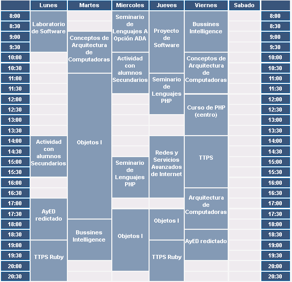
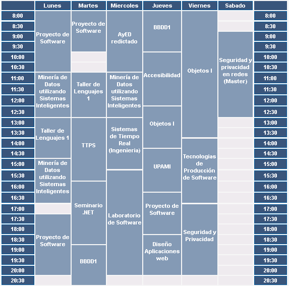

El Problema
- Tres salas de PC (80 equipos)
- Dos sistemas operativos (GNU/Linux Lihuen - Microsoft Windows)
- Software instalado que necesita ser actualizado
- Software nuevo solicitado por las cátedras



Una posible solución
- Parallel-ssh
- Consola
- Escribir Scripts
DjBot
- Interfaz web
- Tareas reutilizables
- Facilidad para agregar, editar y eliminar computadoras al sistema
- Las tareas son ejecutadas por sala
Productos utilizados
- Django
- Rqworker
- Redis
- Sqlite
- Ssh
- Bootstrap
DEMO
El Futuro
- Diseño amigable
- Completar la integración con etherwake (Wake on LAN)
- Consola interactiva para verificar las tareas
Compartir Conocimiento
- GitHub
- Hovercraft
- Todas las ideas son bien recibidas!
- DjBot ( https://github.com/krahser/djbot )